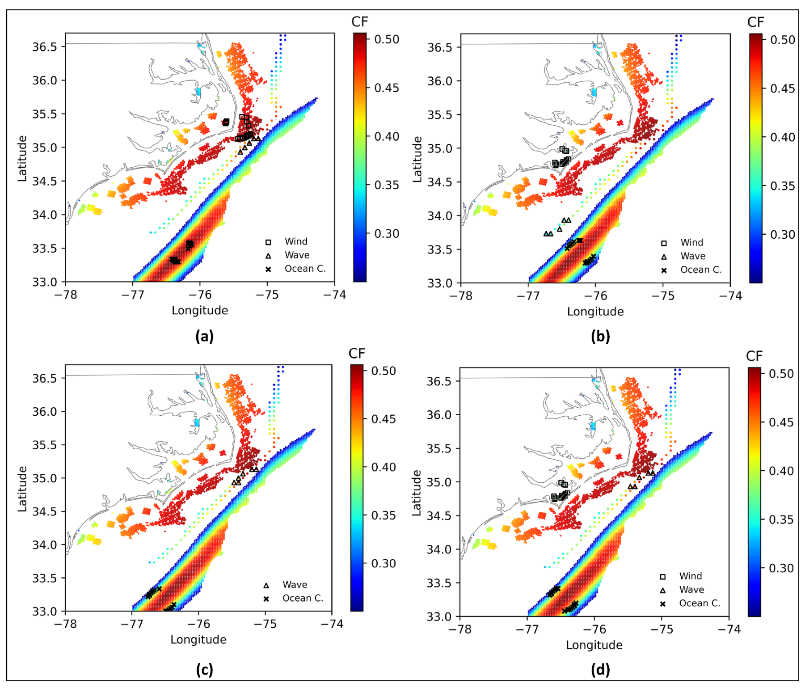

Offshore renewable portfolio optimization for North Carolina
The best offshore energy site depends partly on what other sites produce at the same time. A location with abundant wind or ocean current may deliver inexpensive electricity but do little to smooth a portfolio’s combined output. This project examines where to place wind, wave, and ocean-current devices to balance generation variability and cost, then estimates their value to the wider electricity system.
I worked on this NCROEP project from August 2019 to August 2020, supervised by Anderson R. de Queiroz and Joseph F. DeCarolis. The research was published in Applied Energy in 2022.

Location choices change with the planning objective. Panel (a) shows the lowest-cost locations for separate technology portfolios; panel (b) shows their lowest-variability locations. Panels (c) and (d) show low-variability portfolios combining wave and ocean current, and all three resources, respectively. Colors indicate average capacity factors, and symbols mark selected sites. De Faria et al. (2022), Figure 7. Source paper.
From ocean resources to investment decisions
The analysis converts wind, wave, and ocean-current conditions from 2009–2013 into electricity output on a common three-hour time scale. Device characteristics, water depth, distance from shore, transmission losses, and installation costs determine which sites are feasible and how much electricity they could deliver.
A mean-variance portfolio model selects device locations to minimize generation variability within a specified ceiling on the levelized cost of energy. It also limits devices per site and the geographic reach of the collection system. A two-stage relaxation and refinement procedure makes the problem tractable across more than 5,000 candidate sites and provides lower and upper bounds on the solution.
Finally, selected portfolios are represented in TEMOA, a capacity expansion model of North Carolina’s electricity sector. This step estimates the cost reductions required for each portfolio to enter the modeled generation mix by 2030 or 2050.
Findings
Diversification can smooth offshore generation. The combination of 300 MW wind, 150 MW wave, and 200 MW ocean current had the lowest capacity-factor variability among the capacity mixes tested. Wind-only portfolios were cheaper but more variable.
Wave energy adds value through complementarity. Adding wave generation reduced variability in both wind and ocean-current portfolios, even though wave energy by itself was variable and costly.
Smoother output can support higher project costs. TEMOA assigned higher break-even costs to some portfolios with smoother output. Even so, deployment required cost reductions of 56–84% by 2030 and 34–74% by 2050 relative to the study’s baseline estimates.
The cost-reduction estimates reflect the study’s resource record, technology designs, and cost assumptions. Each comparison fixes the capacity mix and optimizes the sites, with a separate collection and transmission system for each technology. Later projects examine uncertain generation, shared wind-wave infrastructure, and device design and sizing.
Paper and code
2022. Victor A. D. de Faria, Anderson R. de Queiroz, and Joseph F. DeCarolis. Optimizing offshore renewable portfolios under resource variability. Applied Energy, 326, 120012.